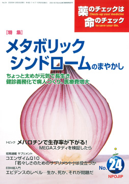

No.24 特集 メタボリックシンドロームのまやかし 2006年10月 発行
最近ようやく、「コレステロールは高めが健康」という意見が少しずつ現れ、コレステロール低化剤の使いすぎに歯止めがかかってきたと思っていたら、
今度は「メタボリックシンドローム」という造語が出てきました。
読者のみなさんも、あなた自身がこのメタボリックシンドロームの基準に当てはまる、と言われると、正直なところ不安になるでしょう。
不安にはならなくても少なくとも「気になる」ことは間違いありません。
仕掛け人にとっては、「気になってくれる」と都合がよいのです。
メタボリックシンドロームの基準は、体脂肪や肥満、高血圧などを組み合わせ、「健康な人」を「病人」扱いして薬を使わせようと
仕掛けた人たちが考え出した「病気の亡霊」ともいうべきものです。
「病気」をつくり、「薬を使えば楽になりますよ」「予防できますよ」と誘惑します。
そして厄介なことに、メタボリックシンドロームを単なる「亡霊」「悪霊」として笑って捨て置けない事態になってきています。
本号では、メタボリックシンドロームとは何か。何がそんなに問題なのか。基本的問題点について解説します。
もくじ
特集
■Ｑ＆Ａ ちょっと太めが元気で長生き
■メタボリックシンドローム対策で医療費は増大
短期連載
■サプリメント：コエンザイムＱ１０
「若々しさのためのサプリメント」は役立つか
提言
■NPOJIPの提言
タミフル脳症は薬害だ！！
連載
■映画のなかのクスリ（１７） ホルモン
■リレーエッセイ 「９２歳でポックリ逝った父」
■みんなのやさしい生命倫理 ２４
EBMの生命倫理（３）
■市民の視点 領収証発行義務化―さあ医療費の明細書をもらおう！―
■EBM超入門（１３）
エビデンスにはレベルがある
■海外の情報
トピック
■メバロチン（ＭＥＧＡスタディ）のごまかし
質問箱
■１ 血圧と頻尿の薬、睡眠剤の併用について
■２ 薬や化粧品の成分を知る方法
■３ 大腸がん特集（２１号）への疑問点
■読者の声
・医師と対等に意見を交わすために
・被災地で正露丸が配られる―もっと警鐘を
・降圧剤を止めて健康です など
■書評
・『ナースが学ぶ「患者の権利」講座―アドボケイトになるための２５の心得』
・『ジフテリア予防接種禍事件 ６９人目の犠牲者』
・『みんなで子育て！ からだ編』
■薬害タミフル脳症被害者の会発足
■「薬のチェック」医療ネットワークをつくろう！
■用語の解説
・メタボリックシンドローム ・ハザード比 ・９５％信頼区間 ・回帰直線 ・サリドマイド ・クロロキン ・メタ解析
・ランダム化（無作為）比較試験 ・除外規定 ・二重目隠し試験 ・死亡率と生存率 ・タミフル脳症
■編集後記
トピック より
メバロチン（ＭＥＧＡスタディ）のごまかし
コレステロール低化剤は発売当初から現在にいたるまで「エビデンス（科学的根拠）に基づく高脂血症治療」を標榜しています。
その根拠は、メバロチン登場の頃は英国での調査結果であり、日本での大規模な調査は、リポバスのメーカーが実施したＪ−ＬＩＴ
（ジェイ・リット）だけでした。（Ｊ−ＬＩＴについては本誌２号：コレステロール特集で解説）。そこへ、２００５年１１月、
厚生労働省（当時、厚生省）の委託研究事業として１９９３年に開始された調査結果が発表されました。メバロチンを用いた群と
メバロチンを用いない対照群とを比較したＭＥＧＡ（メガ）スタディという研究です。試験対象者の約７割、５３５６人が閉経後の女性
だったことから「世界的にも初めて大規模なエビデンス（科学的根拠）として、女性高脂血症患者に対する治療の意義が明確に」
「日本の高脂血症治療の意義が、本試験をもって改めて明確に示されたことは、日常診療の場において、非常に価値が高い」
と実施メーカーは報告しています。
では、どのようなエビデンスがあるというのでしょうか。本誌連載の「ＥＢＭ超入門」で学んだことを基礎に、吟味してみましょう。
（以下、引用省略）
詳しくは本誌で。